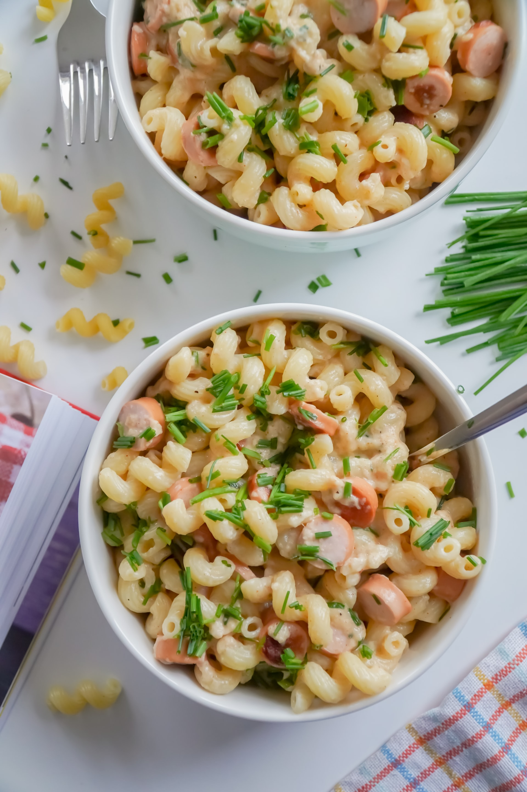

Macaroni

Chopped bison sausage with pepperoni seasoning is blended into this extra cheesy macaroni and cheese dish.
- 2 Cups of Milk
- 2 cups dried elbow macaroni
- 1 ½ cups shredded American and Cheddar cheese blend
- 4 ounces bison sausage with pepperoni seasoning, choppede